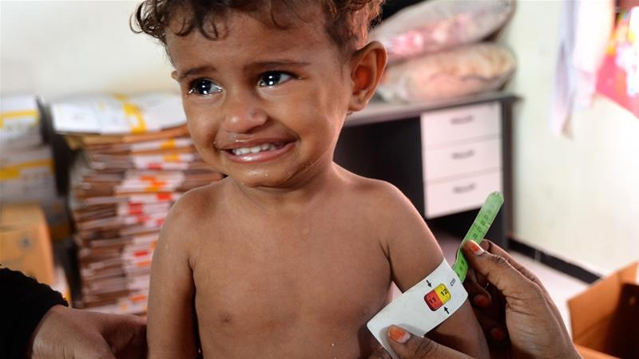

OneHeart


Humanitarian
Donate To Yemen
Since 2016, Yemen, the poorest country in the Middle East and North African region, has been in the midst of a civil war. In 2017, Yemen was declared the world’s largest humanitarian disaster by the United Nations. According to the UN, “An estimated 80 percent of the population — 24 million people — require some form of humanitarian or protection assistance, including 14.3 million who are in acute need. Severity of needs is deepening, with the number of people in acute need a staggering 27 percent higher than last year. Two-thirds of all districts in the country are already pre-famine." Children sleep at night hungry, and to the sounds of gunshots and bombs. The charities listed will send food and needed supplies to the people Yemen.
- Mercy Corps
- Mercy Corps exists to alleviate suffering, poverty and oppression by helping people build secure, productive and just communities.
Almost 87% of all it's expenses goes to charitable program,
Only $7 is spent to raise $100
In 2018 alone, they've spent almost $252 million on a number of causes around the world incuding Yemen.
- Relief International
- Relief Internationl delivers aid to people in fragile places on the edge of life.
$7.4 million was spent on vital services to people in 2019
86% of it's $140 million went to it's services
- International Rescue Committee
- The IRC helps people around the world to survive, recover and rebuild their lives
One of the most trustworthy charities in the world
More than 90% of it's spending serves the people in need
Founded by Albert Einstein in 1931.